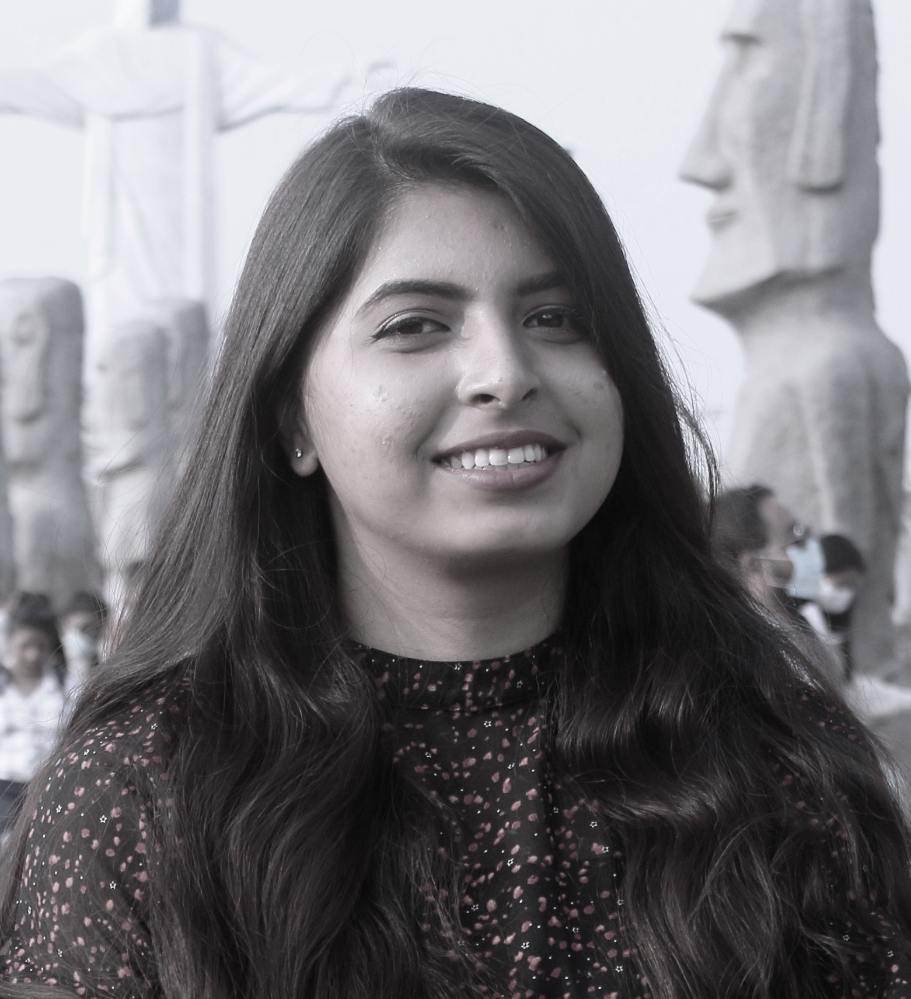

Contact Me
Profile
I am a computer engineering student strong
in design and integration with intuitive
problem-solving skills. Proficient in JAVA, C,
and SQL. Able to translate business
requirements into technical solutions.
Looking to start the career as an entry-level
software engineer with a firm driven by
technology.
Deatils
Location
Santoshpur,Kolkata-700142
EDUCATION
Budge Budge Institute of Technology, MAKAUT
Bachelor of technology in computer science and engineering
2018 – 2021
CGPA: 8.52 (Up to 7th semester)
Skills
ACTIVITES & ACHIEVEMENT
Attended many camps like national camps,
Jamborees district camp from Bharat Scouts
and guides (S.E. Railway) and I received
certificated as a ‘Rastrapati Guide’.
Completed 5th year in fine Arts(painting)
from Pracheen Kala Kendra
LANGUAGES KNOWN